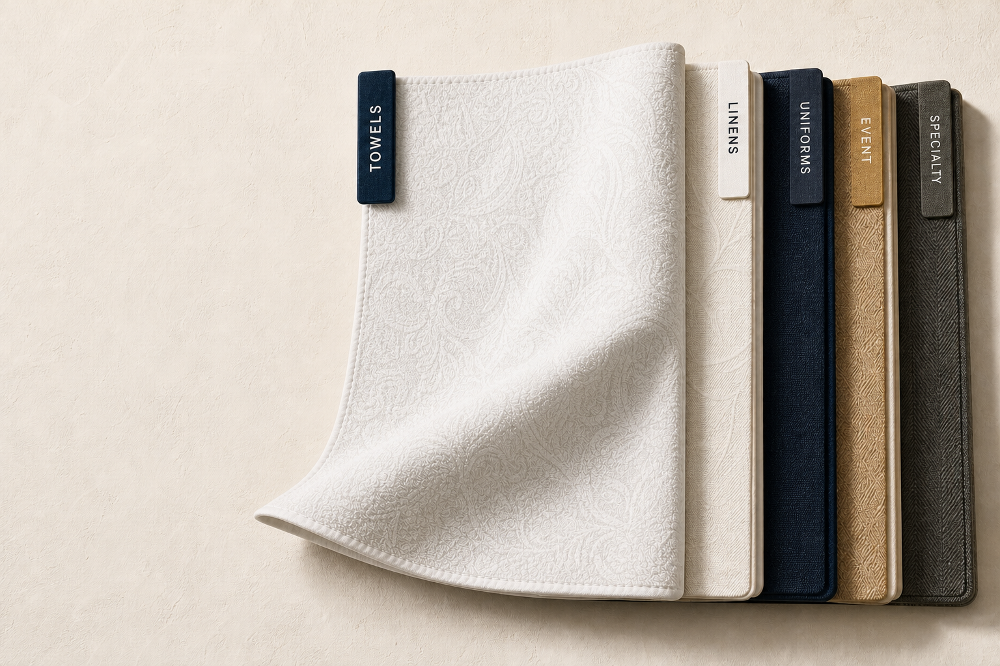
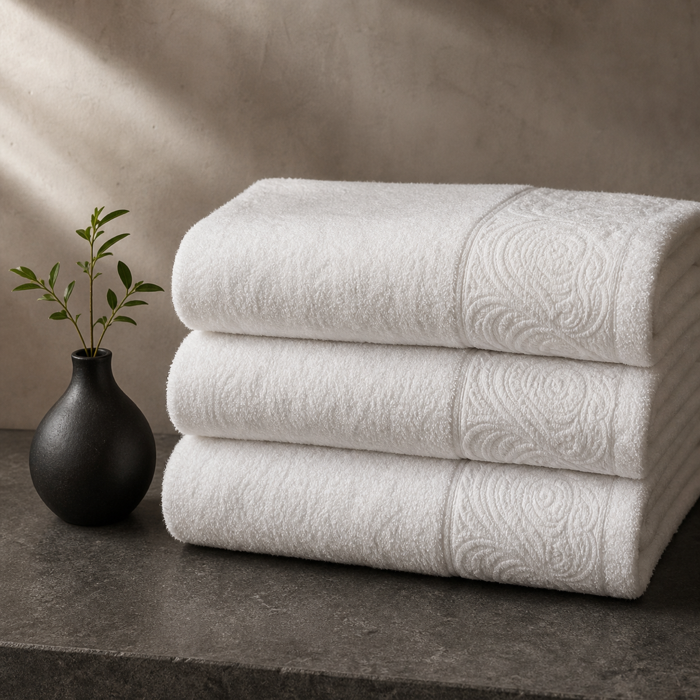
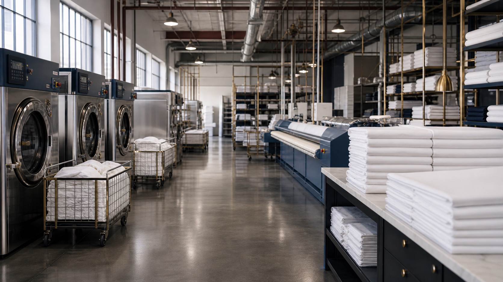
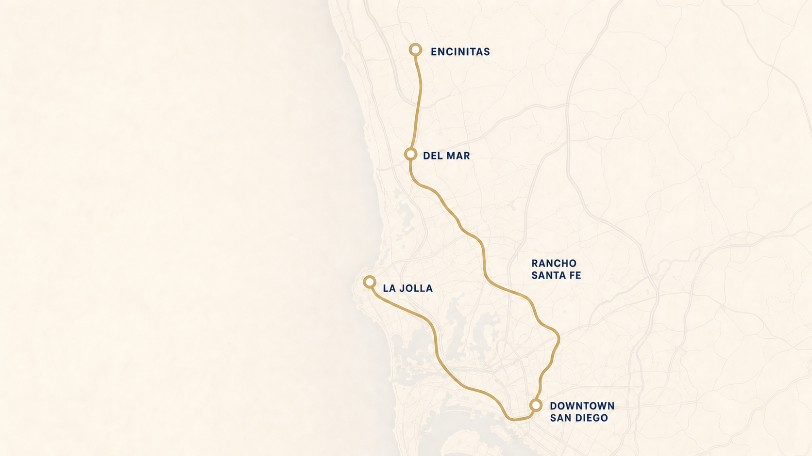

Build a service from what you use.
Open a collection, choose your goods, and watch your program take shape.

Linens & Bedding
Linens
Collection
01 / 06
Flat goods receive a care path built around fabric, soil, presentation, and how your team stages clean inventory.

Who it servesHotelsPropertyRestaurantsHospitality
Built for hotels, boutique stays, property teams, restaurants, banquet operations, and other businesses with recurring flatwork.
What you can sendSheets, pillowcases, duvet covers, blankets, table linen, and napkins.
Guest-room bedding, dining-room linen, banquet goods, and other presentation-sensitive flatwork can be grouped into an account-specific care plan.
How we cleanSorted for the fabric, soil, color, and finish ahead.
Washing and stain treatment are selected around the material, repeated use, and result required.
- Separate
By item, fabric, color, and account.
- Spot
Visible soil is identified for treatment.
- Wash
The process follows material and use.
- Prepare
Goods move to the correct finish.
How we finishPressed, folded, or bundled for its next use.
Presentation goods can move through flatwork finishing, while blankets, duvet covers, and other pieces are folded or bundled to the agreed return standard.
How we inspectSpots, finish quality, condition, and sorting are reviewed.
The visible result is checked with account instructions, including remaining spots, finish consistency, item condition, sorting accuracy, and readiness for return.
How it returnsPressed or folded, bundled, labeled, or cart-ready.
Clean linens can be organized by item, property, department, or storage method and returned in bundles, bags, or linen carts where appropriate.
What requires reviewDelicate construction, heavy staining, damage, or unusual materials.
Specialty fibers, decorative details, unknown care requirements, mold-affected goods, existing damage, and unusual restoration needs should be reviewed first.
Towels & Wellness
Towels
Collection
02 / 06
High-use soft goods are processed around soil, odor, feel, repeat use, and a return format that is easy to restock.

Who it servesHotelsWellnessFitnessHospitality
Designed for hotels, spas, massage and wellness practices, gyms, fitness studios, pools, and other operations with recurring towel demand.
What you can sendBath, hand, workout, pool, and treatment towels, plus robes and mats.
Bath towels, hand towels, washcloths, workout towels, pool goods, treatment-room textiles, bath mats, robes, and face-cradle covers can be planned together.
How we cleanProcessed for use pattern, soil, odor, color, and material.
The cleaning path is selected around repeated use, odor and soil conditions, and material needs.
- Separate
By item, color, soil, and account.
- Treat
Use patterns guide soil treatment.
- Clean
The process follows fiber and condition.
- Condition
Prepared for consistent finishing.
How we finishConsistently dried, folded, bundled, or hung.
Towels are finished for a repeatable fold and compact storage. Robes can return folded or hanging, and treatment sheets can be pressed where selected.
How we inspectCleanliness, remaining spots, condition, and fold are checked.
Finished goods are reviewed for the visible result, remaining soil or spots, item condition, sorting accuracy, and consistency with the return instructions.
How it returnsShelf-ready, cart-ready, bundled, or bagged by item.
Goods can be grouped by type, treatment room, department, or storage setup so the team can restock without re-sorting the delivery.
What requires reviewOils, specialty fabrics, damage, mold, and unusual spa goods.
Heavily oil-affected pieces, specialty wraps, heat-sensitive materials, mold-affected goods, existing damage, and nonstandard treatment textiles require review.
Uniforms & Chef Coats
Uniforms
Collection
03 / 06
Repeated-wear garments need cleaning, finishing, and organization that support both the work and the people wearing them.

Who it servesRestaurantsHospitalityPropertyUniform Accounts
Built for restaurants, caterers, hotels, casinos, property teams, service departments, and other businesses with recurring staff garments.
What you can sendChef coats, aprons, uniform shirts, trousers, jackets, and workwear.
Kitchen garments, branded uniforms, service shirts, trousers, jackets, aprons, and practical workwear can be organized around roles, departments, or locations.
How we cleanGarment-aware care for food soil, grease, repeated wear, and presentation.
Commercial laundering, wet cleaning, dry cleaning, or specialty care is selected according to the garment and its use.
- Review
Fabric, construction, soil, and finish.
- Treat
Visible food and work soil is addressed.
- Clean
The method follows the garment.
- Prepare
Sorted for pressing or folding.
How we finishPressed, steamed, hung, folded, or protected as appropriate.
The finish follows the garment and how the team stores or distributes it. Shirts and chef coats can be pressed and hung while other workwear may return folded.
How we inspectSpots, pressing, garment condition, and organization are reviewed.
Inspection checks remaining spots, finish quality, visible garment condition, correct sorting, and whether pieces are ready for the next handoff.
How it returnsHung or folded, protected, and organized for the team.
Garments can be separated by department, role, location, or account preference and returned on protected hangers, folded, or bundled.
What requires reviewSpecialty trims, coatings, damage, contamination, or tracking needs.
Unusual construction, specialty finishes, delicate trims, existing damage, nonstandard contamination, and individually assigned garment requirements need review.
Event Linens
Events
Collection
04 / 06
Event goods are handled around color, fabric, staining, presentation, and the date they need to be ready again.

Who it servesEventsVenuesCateringRental Houses
Designed for event companies, rental houses, caterers, hotels, venues, convention centers, and production teams managing presentation goods.
What you can sendTablecloths, napkins, runners, skirting, chair covers, and specialty pieces.
Recurring banquet linen, colored table goods, fitted pieces, large-format skirting, and other presentation-sensitive event textiles can be handled by batch.
How we cleanSorted by event, item, fabric, color, stain, and condition.
Goods are separated before treatment so fabric, color, soil, and finish can shape the cleaning path.
- Batch
Kept together by order or account.
- Treat
Staining is reviewed before cleaning.
- Clean
Material and color shape the process.
- Protect
Prepared for the selected finish.
How we finishPressed, hung, or folded for staging and presentation.
The finish is selected by item and next use. Table goods may be pressed and folded while fitted or specialty pieces may be hung or prepared differently.
How we inspectRemaining spots, finish, condition, and batch accuracy are checked.
Inspection covers the visible result, presentation finish, existing condition, item separation, and whether each batch matches the established instructions.
How it returnsSorted by item, event, order, or storage method.
Finished goods can return folded, hung, bundled, or packaged by item type or production batch when those requirements are established in advance.
What requires reviewMold, wax, adhesives, dye transfer, delicate details, and rush dates.
Mold-affected goods, unusual staining, wax or adhesive residue, color transfer, specialty construction, existing damage, and production deadlines require review.
Specialty Cleaning
Specialty
Collection
05 / 06
When a piece does not fit a standard laundry program, the service begins with its material, construction, condition, and intended use.

Who it servesTheatersWorshipEventsSpecialty Accounts
Relevant for theaters, houses of worship, clubs, event teams, hospitality groups, and commercial accounts with unique fabric or presentation needs.
What you can sendCostumes, choir robes, ceremonial garments, colored linen, and unique pieces.
Specialty garments, performance goods, choir robes, decorative textiles, colored presentation pieces, and other nonstandard commercial goods can be submitted for review.
How we cleanThe treatment path is selected item by item or by compatible batch.
Commercial washing, wet cleaning, dry cleaning, or another specialty path is selected only after the item is reviewed.
- Assess
Material, construction, and condition.
- Plan
A compatible treatment is selected.
- Treat
Work follows the agreed care path.
- Review
The visible result is inspected.
How we finishPressed, steamed, hung, folded, or shaped around the item.
Finishing is adapted to the construction and presentation requirement rather than forcing every specialty piece through the same return standard.
How we inspectVisible results, shape, finish, condition, and instructions are checked.
The final review considers remaining spots, finish quality, visible components and trim, sorting, and readiness for the piece’s intended use.
How it returnsProtected and grouped according to the agreed handling plan.
Goods can return hanging, folded, packaged, labeled, or separated by performance, service, event, or account-level batch.
What requires reviewEvery nonstandard item is evaluated before its care path is confirmed.
Care labels, fabric, age, construction, trim, existing damage, mold or contamination, and the requested outcome affect eligibility. Not every result can be accepted or promised.
Wholesale Support
Wholesale
Collection
06 / 06
Behind-the-scenes capacity is most useful when processing, finishing, packaging, and return standards are clearly defined.

Who it servesDry CleanersLaundry PartnersRental OperationsCommercial Programs
Built for cleaners, laundries, event-rental operations, garment-care businesses, and commercial programs that need overflow or ongoing production support.
What you can sendShirts, structured garments, household goods, linens, uniforms, and batches.
Pressed shirts, structured garments, specialty pieces, flatwork, uniforms, household goods, and other partner-sorted production batches can be reviewed for fit.
How we cleanProcessed by compatible batch and the partner standard set upfront.
Commercial laundering, wet cleaning, dry cleaning, or specialty care is selected according to the work received.
- Receive
Requirements are confirmed by batch.
- Separate
By account, item, material, and soil.
- Process
Work follows the partner standard.
- Reconcile
Finished batches are prepared to return.
How we finishPressed, folded, hung, or packaged to the agreed specification.
Finishing can support pressed garments, folded flatwork, hanging pieces, or account-specific packaging when the standard and capacity are confirmed in advance.
How we inspectVisible quality, finish, separation, and return readiness are reviewed.
Finished work is checked against the agreed presentation and return specification, including remaining spots, finish quality, item condition, and batch separation.
How it returnsPartner-ready, organized, and separated by batch or account.
Work can return hanging, folded, bundled, labeled, or packaged according to the workflow established with the service partner.
What requires reviewCapacity, turnaround, batch makeup, specialty work, and packaging.
Urgent deadlines, mixed or unmarked batches, high-value or specialty goods, unusual treatment needs, and nonstandard handling must be reviewed before scheduling.
